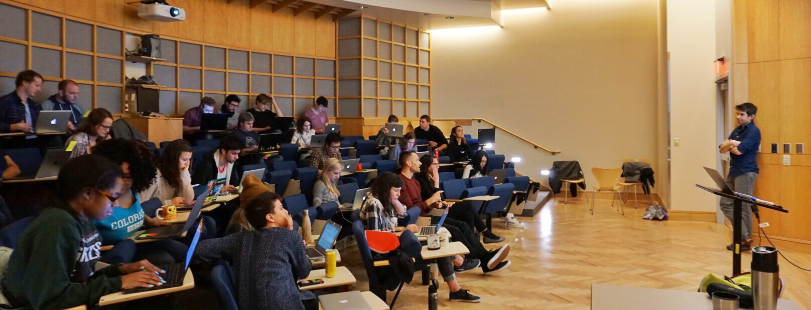

![]()

Well, the week of teaching our Python Bootcamp for Neuroscientists is over. I had the pleasure of working with a great group of students, professors and instructors in developing the material, and had a great time teaching complete beginners to programming and Python.
We had the overall goal of introducting 21 Neuroscience Graduate Program students at OHSU to the basics of programming in Python using data that they were interested in: electrophysiology data, and confocal microscopy data. The course was designed to be a 1 credit course to encourage students to persist and finish it.
The format of the class was spread over 5 days (2.5 hours a day) and had the following schedule:
Introduction to basic data types in Python
Introduction to for loops and Pandas DataFrames
Using Pandas to analyse electrophysiology data
Using NumPy to analyse confocal microscopy data
Evaluation of students; installing Python/Juypter; wrap-up with questions.
I’ll just write up some random thoughts about our experiences about the course. We are definitely planning to give the course again next year, given the enthusiastic reception.
Things that really worked well
Avoid the first day blues of installing Python by using JupyterHub. I think one of the major pain points for beginners is installing software before they can even learn. Instead of making them install Python the first day, we had them sign into an AWS server that had JuypterHub deployed. JupyterHub is a multi-user server for Juypter Notebooks which had the right version of Python and our need the dependencies installed. So our students just needed a laptop and a web browser to access our lessons. We could update the notebooks by pulling changes from our course repo.
Stephen David, my fellow instructor, figured a lot of the difficult deployment details out. He has put together some handy instructions about deploying JuypterHub to AWS and keeping the accounts updated via a GitHub repo in case other people are interested in using our bootcamp materials.
Make the atmosphere welcoming to beginners. In order to do so, we used many great tips from Software/Data Carpentry: modeling resilience by using live coding (and making mistakes along the way), using post-it notes for students to signal when they need help or are finished, and having plenty of TAs per student (at least 4 students/TA or instructor). We tried to emphasize that learning programming is an ongoing process, and that even we still have to Google errors on Stack Overflow. Showing that you can make mistakes and still recover is a big part of that.
Plan some early wins and make the exercises as interactive as possible. For the most part, we tried to avoid lecturing too long and break up the session with interactive exercises. I also really don’t like workshops where the trainer/teacher moves on no matter whether people understand the material or not. By using the post-its to signal when they were done, we were able to more appropriately pace the workshop. We also planned on stopping points if we couldn’t get through the day’s materials.
Emphasize working together and building a community. From the beginning, we emphasized that everyone needed to work together. I always emphasize the chain of help: 1) First your programming partner, 2) then the TA help. Discussing and working on issues together fosters a sense of community. I think there will be a group of students who will really want to learn more because of this.
Getting feedback along the way. I still feel like being a teacher is about 75% preparation and 25% improvisation. You need to be flexible enough to come up with examples on the fly, and you need to evaluate whether students are getting the material along the way. The exercises we tried to sprinkle throughout the notebooks helped us understand where people were stumbling.
Planning follow-up sessions. Through BioData Club, we’re planning some follow-up sessions. Through DataCamp in the Classroom, I also got our students premium access. We also pointed students out to other Python-based courses at OHSU.
Some things we could improve on
I believe that given our time frame, we couldn’t really have anticipated many of these issues. We did our best to deal with them in the moment, however.
Describing the difference between Jupyter Notebooks and Python. At the beginning, we glossed over what a Jupyter Notebook was and really didn’t describe its relation to Python. I think next time we will open with describing the relationship between Jupyter and Python with a diagram, and revisit it on the last day.
Anticipate the JupyterHub server requirements better. On Day 3, we had a large dataset that basically hosed the server because 21 students were trying to open it up at once. We managed to recover by getting another AWS server and dividing the students among the two, but we could have stress tested that day a little more. Lesson learned.
Going slowly enough. I am a very excitable teacher, to the point of which sometimes I go a little too fast. I have to confess that I may have sped through some of the material a little too fast. As a result, some of the students didn’t quite get what functions like enumerate() were for and the concept of unpacking a list. Luckily, Brad Buran covered these on Day 4 and the students felt comfortable enough to finish the programming test on the final day.
Setting student expectations. It’s vital to show the students that they can learn programming, but also what’s possible if they do. One of the days was a big leap from the previous day, but we did mention that it’s really to show them what’s possible if they continued to learn about programming.
Would we do it again?
I would definitely say yes! We had to waitlist some students who really wanted to take it, and our overall feedback about the course was really positive. I hope that we can have more TAs, and have the future data workshops be more student driven.
Acknowlegements
This was a collaboration between the Neuroscience Graduate Program (NGP) and the Department of Medical Informatics and Clinical Epidemiology (DMICE).
The NGP students involved in designing and testing the material were
- Daniela Saderi
- Lucille Moore
- Charles Heller
- Zack Schwartz
Faculty/Instructors involved were:
- Brad Buran (Research Instructor)
- Stephen David (NGP Assistant Professor)
- Lisa Karstens (DMICE Assistant Professor)
- Michael Mooney (DMICE Assistant Professor)
- Ted Laderas (DMICE Assistant Professor)
Thanks very much to Gary Westbrook (Director of the NGP program), Shannon McWeeney (Head of the Division of Bioinformatics and Computational Biology within DMICE), and Bill Hersh (Head of DMICE).
Citation
BibTeX citation:
@online{laderas2018,
author = {Ted Laderas},
title = {What {We} Learned Teaching {Python} to {Neuroscience}
{Students}},
date = {2018-01-17},
langid = {en}
}
For attribution, please cite this work as:
Ted Laderas. 2018. “What We Learned Teaching Python to
Neuroscience Students.” January 17, 2018.